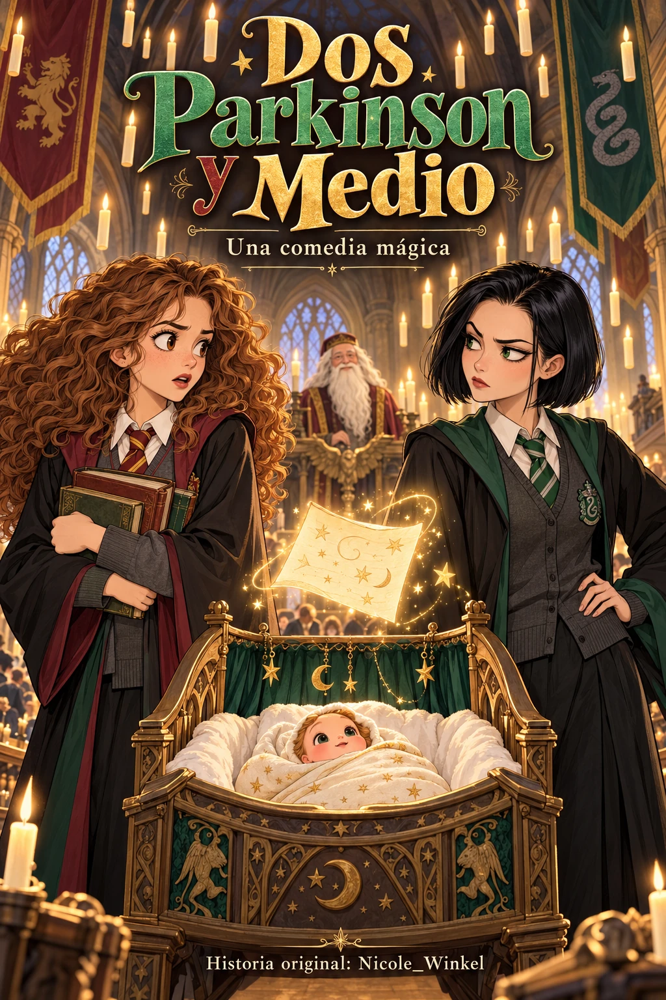

COMEDIA MÁGICA · FAN CÓMIC
Dos Parkinson
y Medio.
Un proyecto de paternidad en Hogwarts. Dos personalidades que no podrían ser más distintas. Y un pequeño detalle que lo cambiará todo.
Cargando la biblioteca…
13 CAPÍTULOS ORIGINALESES EN ESPAÑOL2½ MUCHO POR DESCUBRIR

ELIGE POR DÓNDE EMPEZAR
Entre magia y pañales
La historia, viñeta a viñeta.
Los capítulos se publican por entregas.
Toca una página para ampliarla. Tu punto de lectura se guarda en este dispositivo.
La magia continúa…
No pudimos cargar el índice
Comprueba tu conexión y vuelve a intentarlo.